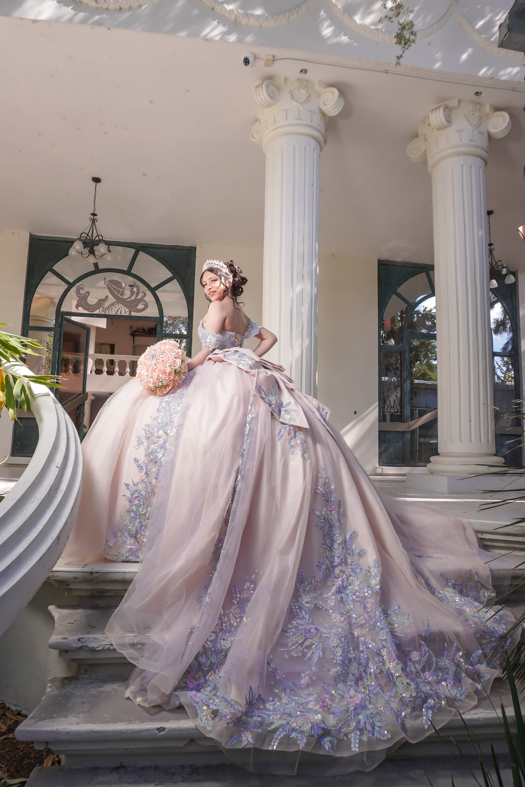
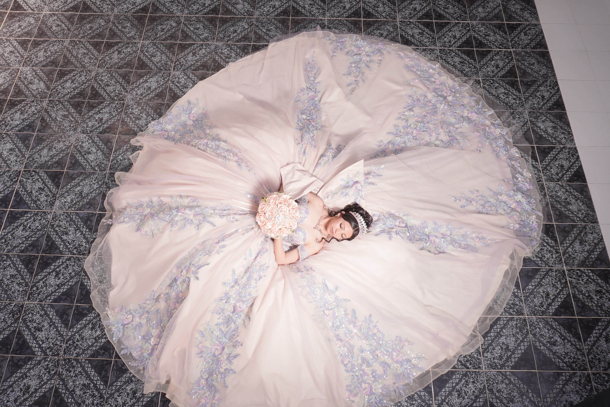

MIS XV
Isabella Montserrat
Dias
Horas
Minutos
Segundos
06 JUNIO 2026
Dale play para escuchar mi cancion favorita
Mis Momentos


Mis queridos padres Daniel Cervantes omaña Isabel Olguin Flores
Mi padrino Luis Felipe Rubió Cervantes
La vida es un mundo de fantasías, cada persona tiene sus sueños, ideales y alegrías. El mío era esperar este día y festejarlo contigo, que eres tan especial en mi vida. Te invito a celebrar junto a mi familia más querida mis quince años de vida.
¡Itinerario!
Iglesia
 2:00pm
2:00pm
2:00pm
3:00pm
Recepcion
Recepcion
Ubicaciones
Parroquia de San Bartolome Apostol.
Día: 06 de junio del 2026
Hora: 2:00 pm
Pl. Benito Juárez 37, Manzana 1, 42601 Chicavasco, Hgo.
¿Como llegar?
Casa de la Familia Cervantez Olguín
Día: 06 de junio del 2026
Hora: 3:00 pm
Santa Maria, Hidalgo
¿Como llegar?